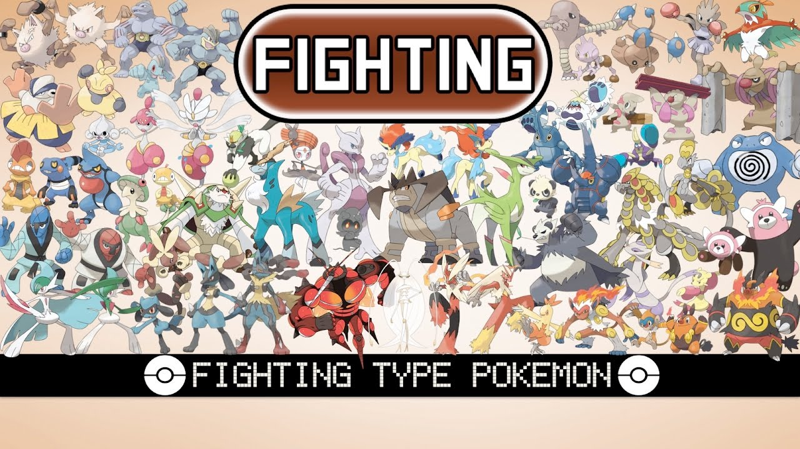
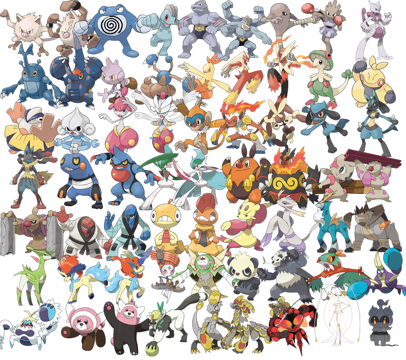

FIGHTING-TYPE POKEMON
Fighting-type Pokémon embody the spirit of determination, discipline, and physical prowess within the Pokémon universe. From the iconic Machamp to the fiery Blaziken, these formidable creatures captivate trainers with their raw strength, tenacity, and unwavering resolve. At the core of their allure is their mastery of hand-to-hand combat, which grants them a formidable array of fighting techniques and martial arts skills. From powerful punches and devastating kicks to agile evasive maneuvers, Fighting-type Pokémon possess a diverse arsenal of moves that allow them to overcome opponents with sheer force and skill. In battles, Fighting-types often excel in physical Attack and Defense, making them formidable adversaries capable of delivering punishing blows while also withstanding incoming assaults with resilience. Moreover, Fighting-type Pokémon boast a wide range of offensive and supportive moves that further enhance their strategic versatility. Moves like Close Combat, High Jump Kick, and Drain Punch are staples of Fighting-type strategies, allowing these Pokémon to deal heavy damage to opponents while also recovering health or boosting their own stats. Additionally, many Fighting-type Pokémon possess unique abilities such as Guts, Iron Fist, and Justified, further augmenting their combat prowess and resilience in battle. Beyond their prowess in combat, Fighting-type Pokémon embody values of honor, discipline, and perseverance. Many Fighting-type Pokémon are revered as symbols of strength and courage, serving as inspirations to trainers and aspirants alike. Their dedication to rigorous training regimens and their unyielding determination in the face of adversity inspire admiration and respect, both in-universe and among fans worldwide. In terms of design, Fighting-type Pokémon encompass a wide range of forms and inspirations, from humanoid fighters and martial artists to fierce animals and mythical creatures. This diversity allows for endless possibilities in terms of aesthetics and themes, ensuring that Fighting-type Pokémon remain consistently captivating and dynamic to fans of all ages. In conclusion, Fighting-type Pokémon stand as a testament to the indomitable spirit and physical prowess within the Pokémon universe. From their formidable combat skills and imposing designs to their values of determination and discipline, these powerful creatures continue to captivate and inspire trainers around the world. As players embark on their journeys, Fighting-type Pokémon serve as reminders of the strength that lies within each individual and the rewards that come from perseverance and dedication.
 